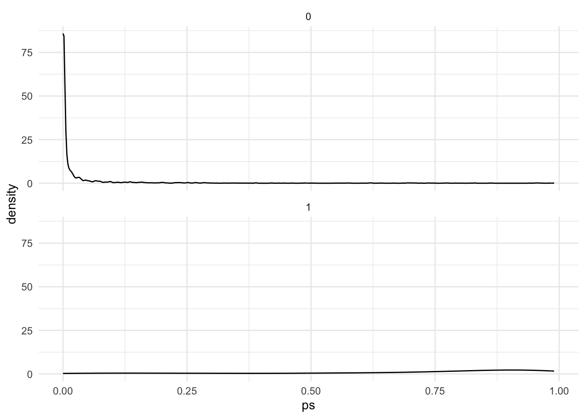
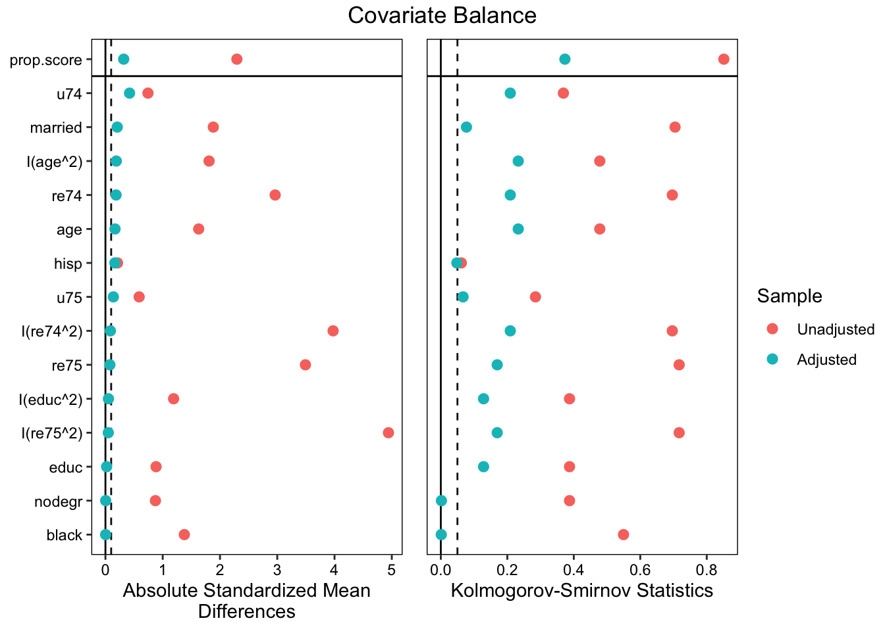
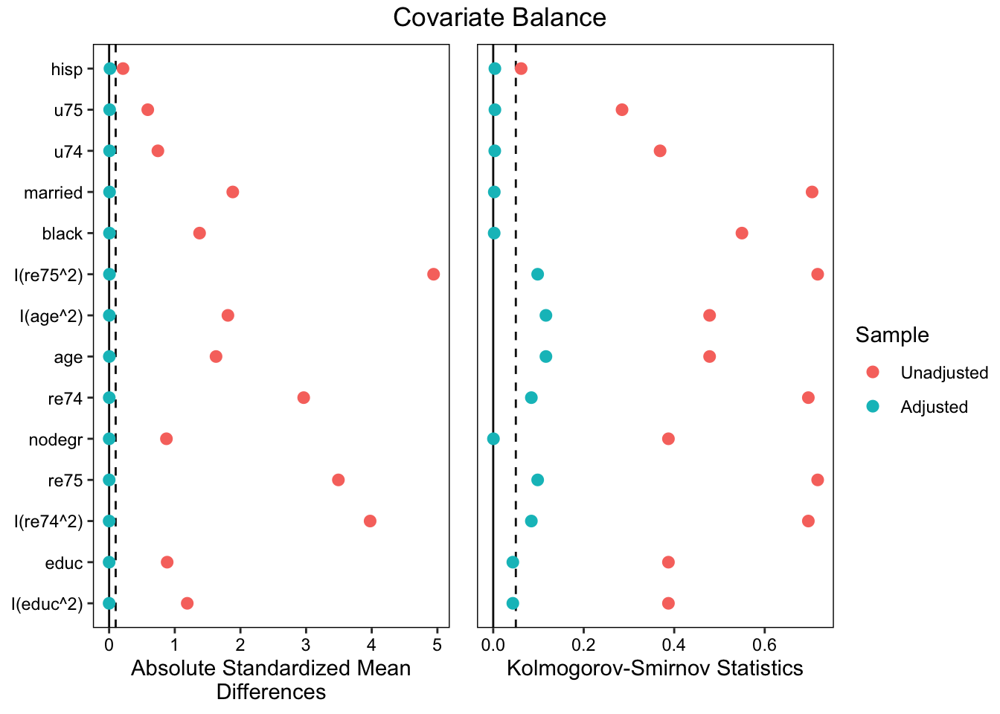

If we look at the experiment subset data, the effect of the job training treatment seems to be $0.89k.
However, when we look at the observational data, it seems that the treatment effect is negative $16.54k, which means receiving the training program makes people’s income decrease by 16.54 thousand dollars compared to those who did not receive. This is just naive estimate and we will need to consider other factors that may contribute to income gap in the following analysis to find out the actual effect of the job training program.
7.1.2 Regression
# Crude regression without any adjustmentsmod0 <-lm(re78 ~ treat, data = d)summary(mod0)
Call:
lm(formula = re78 ~ treat, data = d)
Residuals:
Min 1Q Median 3Q Max
-22.518 -9.218 -0.318 7.082 98.482
Coefficients:
Estimate Std. Error t value Pr(>|t|)
(Intercept) 22.5177 0.3193 70.52 <2e-16 ***
treat -16.5413 0.9282 -17.82 <2e-16 ***
---
Signif. codes: 0 '***' 0.001 '**' 0.01 '*' 0.05 '.' 0.1 ' ' 1
Residual standard error: 15.02 on 2508 degrees of freedom
Multiple R-squared: 0.1124, Adjusted R-squared: 0.112
F-statistic: 317.6 on 1 and 2508 DF, p-value: < 2.2e-16
# Regression adjust for income and other socio-economic statusmod1 <-lm(re78 ~ treat + age + educ + black + hisp + married + re74 + re75, data = d)summary(mod1)
Call:
lm(formula = re78 ~ treat + age + educ + black + hisp + married +
re74 + re75, data = d)
Residuals:
Min 1Q Median 3Q Max
-63.702 -4.243 -0.396 3.839 110.167
Coefficients:
Estimate Std. Error t value Pr(>|t|)
(Intercept) 0.21277 1.42920 0.149 0.88166
treat -1.50882 0.81911 -1.842 0.06559 .
age -0.06362 0.02212 -2.876 0.00406 **
educ 0.60821 0.07904 7.695 2.02e-14 ***
black -0.50734 0.51875 -0.978 0.32817
hisp 1.45946 1.07771 1.354 0.17579
married 1.00049 0.62050 1.612 0.10700
re74 0.26699 0.02968 8.996 < 2e-16 ***
re75 0.54552 0.02908 18.762 < 2e-16 ***
---
Signif. codes: 0 '***' 0.001 '**' 0.01 '*' 0.05 '.' 0.1 ' ' 1
Residual standard error: 10.16 on 2501 degrees of freedom
Multiple R-squared: 0.5952, Adjusted R-squared: 0.5939
F-statistic: 459.7 on 8 and 2501 DF, p-value: < 2.2e-16
The regression still shows that the effect of the program is negative (though not significant after we adjust for the income level)
7.1.3 Exact matching
ematch <-matchit(treat ~ black + hisp + married + nodegr + u74 + u75, data = d,method ="exact")summary(ematch)[[2]]
Control Treated
All (ESS) 2213.00000 297
All 2213.00000 297
Matched (ESS) 59.52143 287
Matched 2092.00000 287
Unmatched 121.00000 10
Discarded 0.00000 0
Call:
lm(formula = re78 ~ treat, data = ematch_data, weights = weights)
Weighted Residuals:
Min 1Q Median 3Q Max
-109.035 0.610 2.407 4.770 113.179
Coefficients:
Estimate Std. Error t value Pr(>|t|)
(Intercept) 8.2437 0.2317 35.577 < 2e-16 ***
treat -2.3863 0.6671 -3.577 0.000354 ***
---
Signif. codes: 0 '***' 0.001 '**' 0.01 '*' 0.05 '.' 0.1 ' ' 1
Residual standard error: 10.6 on 2377 degrees of freedom
Multiple R-squared: 0.005354, Adjusted R-squared: 0.004936
F-statistic: 12.8 on 1 and 2377 DF, p-value: 0.0003545
10 treated cases cannot be matched.
FSATT is negative $2.39k, which means those who participated in the training program have $2.39k compared to those did not.
7.1.4 Propensity score use glm()
ps_mod <-glm(formula = treat ~ age +I(age^2) + educ +I(educ^2) + black + hisp + married + nodegr + re74 +I(re74^2) + re75 +I(re75^2) + u74 + u75, data = d, family ="binomial")summary(ps_mod)
Call:
glm(formula = treat ~ age + I(age^2) + educ + I(educ^2) + black +
hisp + married + nodegr + re74 + I(re74^2) + re75 + I(re75^2) +
u74 + u75, family = "binomial", data = d)
Coefficients:
Estimate Std. Error z value Pr(>|z|)
(Intercept) -4.0860109 2.0931327 -1.952 0.050926 .
age 0.0885744 0.0972988 0.910 0.362647
I(age^2) -0.0029497 0.0014994 -1.967 0.049147 *
educ 0.8446841 0.3120974 2.706 0.006800 **
I(educ^2) -0.0468130 0.0162233 -2.886 0.003908 **
black 1.9621150 0.2719006 7.216 5.34e-13 ***
hisp 2.4117400 0.4512282 5.345 9.05e-08 ***
married -2.0307420 0.2332962 -8.705 < 2e-16 ***
nodegr 0.0177758 0.3420739 0.052 0.958557
re74 -0.0560163 0.0511241 -1.096 0.273214
I(re74^2) 0.0012223 0.0016798 0.728 0.466828
re75 -0.1544280 0.0418499 -3.690 0.000224 ***
I(re75^2) 0.0004442 0.0012405 0.358 0.720281
u74 2.3537938 0.4966435 4.739 2.14e-06 ***
u75 -1.2273787 0.4540319 -2.703 0.006866 **
---
Signif. codes: 0 '***' 0.001 '**' 0.01 '*' 0.05 '.' 0.1 ' ' 1
(Dispersion parameter for binomial family taken to be 1)
Null deviance: 1825.16 on 2509 degrees of freedom
Residual deviance: 610.11 on 2495 degrees of freedom
AIC: 640.11
Number of Fisher Scoring iterations: 9
d$ps <-predict(ps_mod, data = d, type ="response")# Box plotd |>ggplot(aes(x = ps)) +geom_density() +facet_wrap(~treat, nrow =2, ncol =1) +theme_minimal()

The result shows that lower income (or no income), being black or hispanic, and being unmarried are positively associated with receiving the training program.
Besides, age is non-linearly associated with receiving the treatment. With \(\frac{0.8447}{(-2) * (-0.0468)} \approx 9\) as a boundary line, for those who receive less than 9 years of education, one more year of education is positively associated with participating in the training program, while for those who have more than 9 years of education, one more year of education is negatively associated with participating in the training program.
From the density plot, we can see that those who actually treated has a higher propensity score, while the distribution of propensity score centers around 0 for the controlled group.
Warning: Some extreme weights were generated. Examine them with `summary()` and
maybe trim them with `trim()`.
love_plot(psmatch)

psmod <-lm(re78 ~ treat, data = d, weights = psmatch$weights)summary(psmod)
Call:
lm(formula = re78 ~ treat, data = d, weights = psmatch$weights)
Weighted Residuals:
Min 1Q Median 3Q Max
-24.136 0.086 0.418 1.226 54.332
Coefficients:
Estimate Std. Error t value Pr(>|t|)
(Intercept) 4.8371 0.1714 28.229 < 2e-16 ***
treat 1.1393 0.2682 4.248 2.23e-05 ***
---
Signif. codes: 0 '***' 0.001 '**' 0.01 '*' 0.05 '.' 0.1 ' ' 1
Residual standard error: 3.555 on 2508 degrees of freedom
Multiple R-squared: 0.007144, Adjusted R-squared: 0.006748
F-statistic: 18.05 on 1 and 2508 DF, p-value: 2.234e-05
Only part of the covariates look balanced after adjustments.
After weighting by the propensity score, the ATT is 1.14 (finally positive! though still a little different from the actual effect we can get from the experimental data.
Warning: The optimization failed to converge in the alotted number of
iterations. Try increasing `maxit`.
Warning: Some extreme weights were generated. Examine them with `summary()` and
maybe trim them with `trim()`.
love_plot(etmatch)

etmod <-lm(re78 ~ treat, data = d, weights = etmatch$weights)summary(etmod)
Call:
lm(formula = re78 ~ treat, data = d, weights = etmatch$weights)
Weighted Residuals:
Min 1Q Median 3Q Max
-68.289 0.047 0.575 2.386 142.862
Coefficients:
Estimate Std. Error t value Pr(>|t|)
(Intercept) 5.8019 0.1696 34.214 <2e-16 ***
treat 0.1744 0.4930 0.354 0.724
---
Signif. codes: 0 '***' 0.001 '**' 0.01 '*' 0.05 '.' 0.1 ' ' 1
Residual standard error: 7.977 on 2508 degrees of freedom
Multiple R-squared: 4.991e-05, Adjusted R-squared: -0.0003488
F-statistic: 0.1252 on 1 and 2508 DF, p-value: 0.7235
The balance looks better than the propensity score method. The ATT is 0.174.
7.1.7 Standard error using bootstrapping
psm_func <-function(d){ sample_d <- d[sample(nrow(d), replace =TRUE),] psmatch <-weightit(treat ~ age +I(age^2) + educ +I(educ^2) + black + hisp + married + nodegr + re74 +I(re74^2) + re75 +I(re75^2) + u74 + u75, method ="ps",estimand ="ATT",data = sample_d) est <-weighted.mean(sample_d$re78[sample_d$treat ==1], w = psmatch$weights[sample_d$treat ==1]) -weighted.mean(sample_d$re78[sample_d$treat ==0], w = psmatch$weights[sample_d$treat ==0])return(est)}sim_size <-3000sim_df <-data.frame(sim_id =c(1:sim_size)) |>rowwise() |>mutate(coef =psm_func(d))
Warning: There were 3003 warnings in `mutate()`.
The first warning was:
ℹ In argument: `coef = psm_func(d)`.
ℹ In row 1.
Caused by warning:
! Some extreme weights were generated. Examine them with `summary()` and maybe trim them with `trim()`.
ℹ Run `dplyr::last_dplyr_warnings()` to see the 3002 remaining warnings.